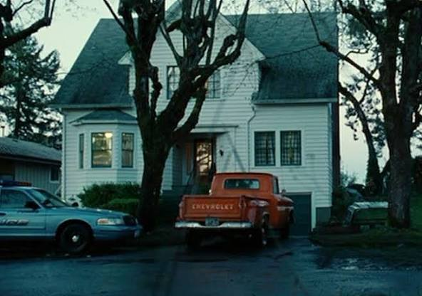
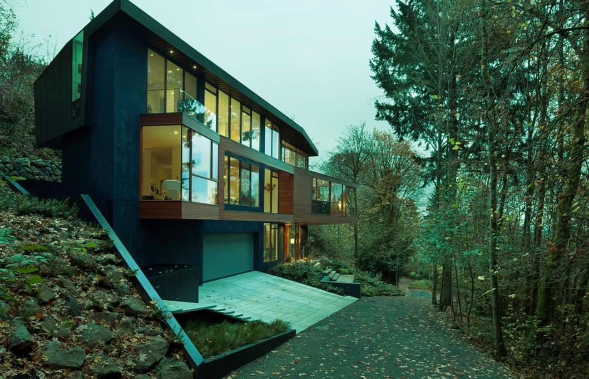
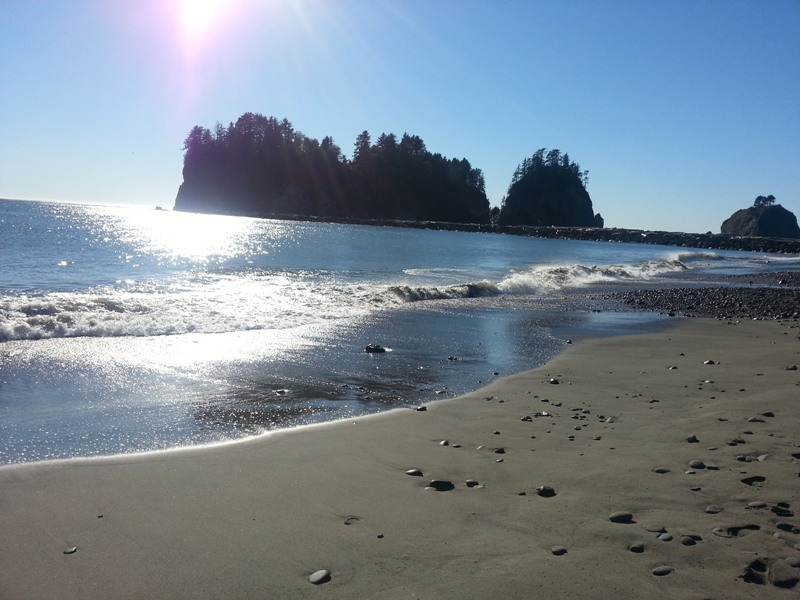
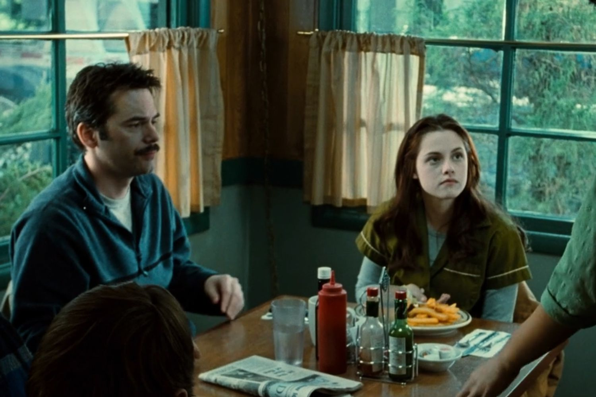
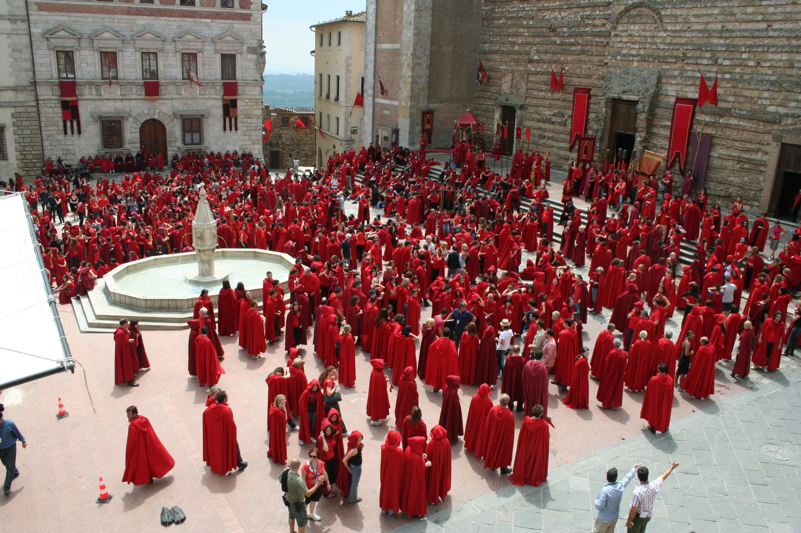

Bella Swan's House: St. Helens, OR
Visit Bella's House at 184 S 6th St, St. Helens, OR! This 1930s home became instantly iconic after Twilight. It has even been renovated to match the movie interior and is sometimes available to rent as a themed stay.
Forks High School: Kalama, WA
The exterior shots of Forks High School were filmed at Kalama High School in Kalama, Washington. This is where Bella first sees Edward in biology class and where many unforgettable scenes take place.

Cullen House: Portland, OR
The Cullen family's modern glass home is located in Portland, Oregon. Known as the Hoke House, this stunning contemporary home perfectly matched the vampire aesthetic with its floor-to-ceiling windows and forest surroundings.
La Push Beach: Cannon Beach, OR
While the story takes place in La Push, many beach scenes featuring Jacob and the Quileute tribe were filmed at Cannon Beach. The dramatic Pacific Northwest coastline adds to the moody atmosphere of the saga.
Baseball Scene: Columbia River Gorge, OR
The iconic vampire baseball scene was filmed in a private field near the Columbia River Gorge. Surrounded by lush greenery and dramatic skies, it became one of the most memorable moments in the entire series.

Bella & Charlie’s Diner: Damascus, OR
The cozy diner where Bella and Charlie eat together was filmed at Carver Café in Damascus, Oregon. This real-life café became iconic for its small-town vibe and is a must-visit for fans wanting to sit where Bella ordered her infamous veggie burger.
Volterra Scenes: Montepulciano, Italy
Although the Volturi rule from Volterra in the books, the New Moon scenes were actually filmed in Montepulciano, Italy. The historic piazza and clock tower are where Bella races to stop Edward.
